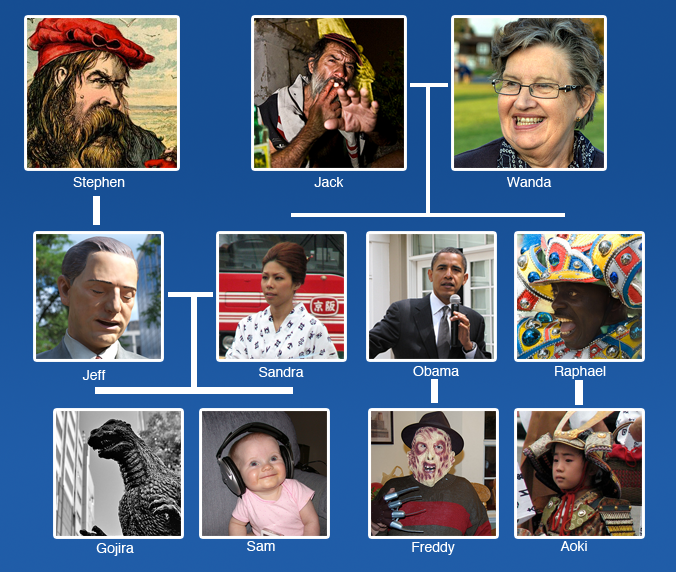

The Family Tree, Part 2
“Be who you are and say what you feel because those who mind don’t matter and those who matter don’t mind.” - Dr. Seuss
Let’s take a look at the picture below. There’s not too much going on with this family tree (only three generations). Just in case you’re confused by it, basically lines indicate relation. So, “Stephen” is the father of Jeff. Jack and Wanda are married and created three children. Jeff and Sandra got married and had a couple children. Obama and Raphael had their own kids, too. Sure, the family tree itself doesn’t make any sense at all, but it’ll be perfect for studying and practicing the particle の and だれ :)

Anyways, can you imagine how Christmas is? I would keep Freddy away from his cousins, and little Gojira shouldn’t be allowed near the Baby Jesus barn replica. Time to ask you some questions – first, an example:
Jackさん は だれ ですか。 (who is Jack?)
Jackさん は Obamaさん の おとうさん です。
Jack is Obama’s Father.
Jackさん は Freddyさん の おじいさん です。
Jack is Freddy’s Grandfather.
Jack is Sandra’s Father.
Jackさん は Sandraさん の おとうさん です。
Jackさん は Gojiraさん の おとうさん じゃありません。
Jack is not Gojira’s father
Jack is Gojira’s grandfather
Jackさん は Gojiraさん の おじいさん です。
Samさん は だれ ですか。 (who is Sam?)
Sam is Gojira’s younger brother.
Samさん は Gojiraさん の おとうとさん です。
Samさん は Sandraさん の むすこさん です。
Sam is Sandra’s Son
Stephenさん は だれ ですか。(who is Stephen?)
Stephenさん は Jeffさん の _________ です。
おとうさん (Stephen is Jeff’s Father).
Stephen is Gojira’s _________.
Stephenさん は Gojiraさん の おじいさん です。
Obamaさん は だれ ですか。(who is Obama?)
Obamaさん は Freddyさん の おとうさん です。
Obama is Freddy’s father.
Obama is Wanda’s son.
Obamaさん は Wandaさん の むすこさん です。
We’re now going to move on to the practice page to hopefully hit all these concepts home. Make sure you understand だれ as well as the above sentences, then move on.